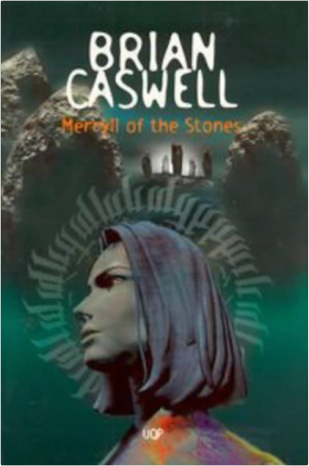
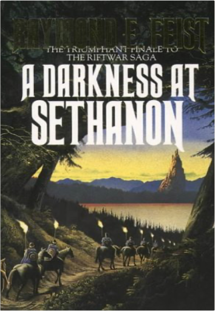
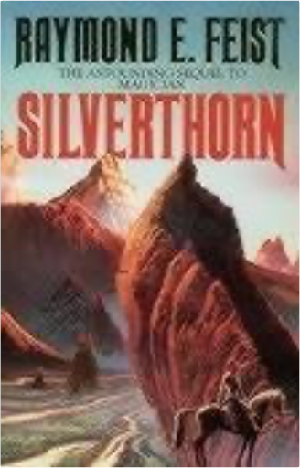
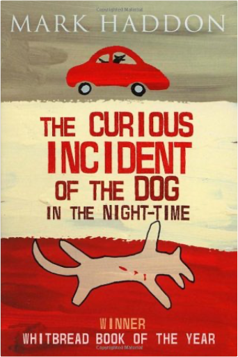
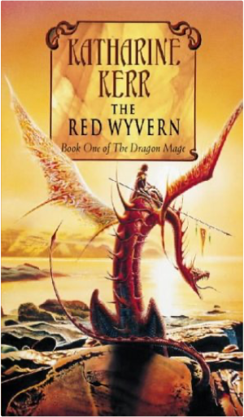

 Merryll of the stonesBrian Caswell  Orphaned by an automobile accident in Australia, fifteen-year-old Megan returns to her family's native Wales where, with the help of a new friend, she discovers her true destiny and the meaning of her terrifying dreams.  Generally considered the first English sensation novel, The Woman in White features the remarkable heroine Marian Halcombe and her sleuthing partner, drawing master Walter Hartright, pitted against the diabolical team of Count Fosco and Sir Percival Glyde. A gripping tale of murder, intrigue, madness, and mistaken identity, Collins's psychological thriller has never been out of print in the 140 years since its publication.  Darkness at SethanonRaymond E Feist An evil wind blows through Midkemia. Dark legions have risen up to crush the Kingdom of the Isles and enslave it to dire magics. The final battle between Order and Chaos is abotu to begin in the ruins of the city called Sethanon.  Raymond E. Feist's classic fantasy epic, Magician, has enchanted readers for over twenty years. The revised edition was prepared to celebrate the tenth anniversary of its publication, and incorporates over 15,000 words of text omitted from previous editions. At Crydee, a frontier outpost in the tranquil Kingdom of the Isles, an orphan boy, Pug, is apprenticed to a master magician — and the destinies of two worlds are changed forever. Suddenly the peace of the Kingdom is destroyed as mysterious alien invaders swarm the land. Pug is swept up into the conflict but for him and his warrior friend, Tomas, an odyssey into the unknown has only just begun. Tomas will inherit a legacy of savage power from an ancient civilization. Pug's destiny is to lead him through a rift in the fabric of space and time to the mastery of the unimaginable powers of a strange new magic.  SilverthornRaymond E Feist This is the second volume of Raymond E. Feist's great epic of heroic fantasy. For nearly a year peace reigned the enchanted kingdom of Rillanon. But new challenges awaited Arutha the Prince of Krondor when Jimmy The Hand - youngest thief in the Guild of Mockers - came upon a sinister Nighthawk poised to assassinate him. What evil power raises the dead and makes corpses do battle with the living at the behest of the Guild of Death? And what high magic can defeat it? The new King of Midkemia is threatened - and a life-or-death quest must be undertaken for an antidote to a poison that fells a beautiful Princess on her wedding day! "The best new fantasy concept in years! Has a chance of putting its author firmly on the throne next to Tolkein - and keeping him there" - "Dragon". "Epic scope! vivid imagination!a significant contribution to the growth of the field of fantasy" - "Washington Post". |  The second instalment of The Riftwar Legacy, Assassins reveals Feist at his storytelling best. There is intrigue, humour and breakneck action aplenty here from the undisputed master of epic fantasy. Fresh back from the front, another foe defeated, Prince Arutha arrives to find all is not well in Krondor. A series of apparently random murders has brought an eerie quiet to the city. Where normally the streets are bustling with merchants and tricksters, good life and night life, now there seems to be a self-imposed curfew at sundown. Mutilated bodies have been turning up in the sewers, the Mockers' demense. The Thieves' Guild has been decimated - men, women, children, it matters not. The head of the Mockers is missing, presumed dead. Those few who survived the terrible attacks are lying low. Very low. The Crawler, it seems, is back in town. And he's being helped by others, more ruthless than he. Can it be the Nighthawks again? The Prince enlists his loyal Squire James to find out. If anyone can unravel what's happening in the bowels of Krondor, he can. He knows the sewers like the back of his hand. Afterall, as Jimmy the Hand, he grew up there. Meanwhile, the retinue of the Duke of Olasko has arrived suddenly at the palace, a week ahead of schedule but with no apologies and many demands. They say they are here to hunt. But to hunt what. Pug's son William, on his first posting as a knight-lieutenant, must escort them into the wilds. It should have been a straightforward mission...  Beautiful, flaxen-haired Buttercup has fallen for Westley, the farm boy, and when he departs to make his fortune, she vows never to love another. So when she hears that his ship has been captured by the Dread Pirate Roberts - who never leaves survivors - her heart is broken. But her charms draw the attention of the relentless Prince Humperdinck who wants a wife and will go to any lengths to have Buttercup. So starts a fairytale like no other, of fencing, fighting, torture, poison, true love, hate, revenge, giants, hunters, bad men, good men, beautifulest ladies, snakes, spiders, beasts, chases, escapes, lies, truths, passion and miracles.  The Curious Incident of the Dog in the Night-TimeMark Haddon Christopher is 15 and lives in Swindon with his father. He has Asperger's Syndrome, a form of autism. He is obsessed with maths, science and Sherlock Holmes but finds it hard to understand other people. When he discovers a dead dog on a neighbour's lawn he decides to solve the mystery and write a detective thriller about it. As in all good detective stories, however, the more he unearths, the deeper the mystery gets - for both Christopher and the rest of his family.  Red WyvernKatharine Kerr Book nine of the celebrated Deverry series, an epic fantasy rooted in Celtic mythology that intricately interweaves human and elven history over several hundred years. A new chapter of the history of the kingdom of Deverry - an ideal starting point for newcomers to Katharine Kerr's gorgeous epic, and a satisfying continuation of the saga for those readers who have followed the series through its previous incarnations. In Cengarn, Rhodry of the silver daggers - half-elven, half-human - is beset by strange dreams. A dark-haired enchantress, the Raven Woman, is haunting his sleep, and he can find no release, even in the arms of Dallandra, his lover. Little does he know that his feud with the Raven Woman goes back over three hundred years, to a time when the very throne of Deverry stood under threat of civil war. |

Doddridge Library
Collection Total:
417 Items
417 Items
Last Updated:
Apr 21, 2020
Apr 21, 2020

 Made with Delicious Library
Made with Delicious Library